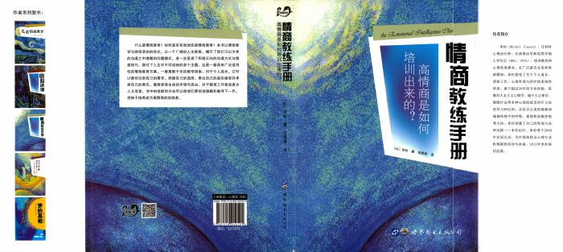

A GUIDE TO THE WORK
Explore by Topic
Along with the methods, dreamwork, emotional intelligence education and teaching records, read the works and published materials of Michel Claeys.
READING PATHS
Begin with a question,
follow the evidence.
The same topic can be read at four levels: articles, original works, teaching records and courses. Choose the direction you care about and then enter the specific information.
THE METHOD
The Essence Therapy Method
Enter from the current physical sensation, identify the inner space of injury and resources, and then think about how to implement inner work into life. The following information respectively explains the method definition, working principles, original discussion and on-site learning.

Essence Therapy: Feel the inner space from the body
Read the Chinese introduction to Michel Claeys 2024 updated discussion.
Reading materialsMethod structureSeven principles, how to enter into practice
Distinguish between present experience, resource connection and life integration.
Reading materialsChinese worksCounseling from the Heart (《由心咨询》)
Understand the counseling relationship, working principles and transpersonal perspective from the original work.
Reading materialsOn-site learningEssence Therapy Level I
View learning objects, course topics, exercise formats and current schedule.
Reading materialsDREAM WORK
dreamwork
The image of the dream needs to be understood in the context of the dreamer's own experience. Remembering dreams, listening, translating and inner work constitute a path of exploration; the dreamer's feelings and reality are more important than applying fixed interpretations.

Dreamwork: Listen First, Then Interpret
Understand the basic sequence of dream recording, dream listening and interpretation from public articles.
Reading materialsChinese worksThe Truth of Dreams (《梦的真相》)
Systematic reading of dream language, dream interpretation process and inner workings.
Reading materialsTeaching recordsThe first dreamwork square in Beijing in 2005
Learn about the early practice of dreamwork in China.
Reading materialsOn-site learningDreamwork Workshop with Michel Claeys
Check out the current schedule of dream interpretation, demonstrations and group exercises.
Reading materialsEMOTIONAL EDUCATION
emotional intelligence education and parenting
Michel Claeys’s emotional and social education work is geared towards different ages and scenarios. Chinese works extend from educator's activity design to children's growth and family relationships; when reading, you can choose the entrance based on practical scenarios.

The Emotional Intelligence Coach's Handbook (《情商教练手册》)
Design of reading group activities, emotional expression and social learning.
Reading materialschildren educationEmotional Intelligence Education for Children (《儿童情商教育》)
Learn about emotional and social learning topics for children.
Reading materialsfamily upbringingParent Yourself Before Raising Children (《育儿先育己》)
Entering the parent-child relationship from the caregiver's own awareness.
Reading materialsTeaching recordsBeijing Institute of Graphic Graphicsemotional intelligenceCourse
View the information of two college courses in 2006-2007.
Reading materialsClassroom featureBeijing Emotional Intelligence Level I, 2026
Follow six days of classroom practice and activity design.
Reading materialsFacilitation practiceEssence Emotional Intelligence Trainers Alliance
Meet the mentors, explore participant-led themes and see projects in development.
Reading materialsTHE PUBLIC RECORD
Michel Claeys Teaching in China
Character introductions, works and course history complement each other. Public information from universities records the lecture plans and professional training of Michel Claeys in China; course information in recent years helps readers understand on-site learning at different stages.
Michel Claeys
Read Michel Claeys’s professional experience, Chinese works and teaching directions.
Reading materialsprocessTeaching records in China
View verified public nodes by year, city, and topic.
Reading materialsCollege reports2010 Huaqiao University Professional Training
The school report recorded the seven principles and dreamwork in the five-day guidance.
Reading materialsCollege preview2013 Beijing Normal University Dream Lecture
Check the lecture preview released by the school.
Reading materialsCONTINUE READING
Return to the original work and scene.
The topic guide helps you find the entrance. For a more complete description of the method, please read the original work; for specific course arrangements and consultation methods, please see the current course page.